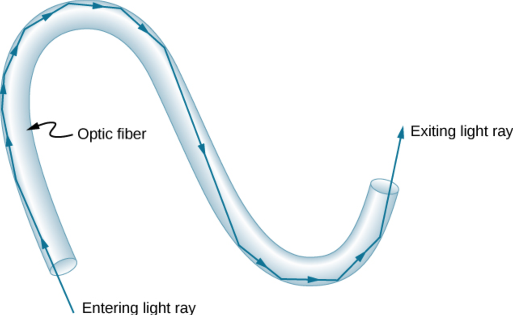
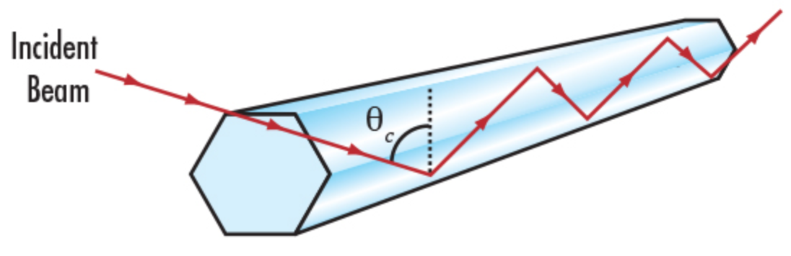

Selection Structures
Decision making via conditional statements is an important building block in algorithm design; Selection is used to control the flow of execution of a program.
Conditional Statements
Conditional statements in Python include:
ifstatementif....elsestatementsif....elif....elsestatements
Conditional statements are logical expressions that evaluate as TRUE or FALSE and using these results to perform further operations based on these conditions.
Nearly all flow control in a program depends on evaluating conditions. The program will proceed diferently based on the outcome of one or more conditions - really sophisticated AI programs are a collection of conditions and correlations.
Expressed in a flowchart a block if statement looks like:

As psuedo code:
if(condition is true):
do stuff
Amazon knowing what you want is based on correlations of your past behavior compared to other peoples similar, but more recent behavior, and then it uses conditional statements to decide what item to offer you in your recommendation items. It's a bit spooky, but ultimately just a program running in the background trying to make your money theirs.
Comparison
The most common conditional operation is comparison. If we wish to compare whether two
variables are the same we use the == (double equal sign).
For example x == y means the program will ask whether x and y have the same value.
If they do, the result is TRUE if not then the result is FALSE.
Other comparison signs are != does NOT equal, < smaller than, >larger than, <=less than or equal, and >= greater than or equal.
There are also three logical operators when we want to build multiple compares
(multiple conditioning); these are and, or, and not.
The and operator returns TRUE if (and only if) all conditions are TRUE.
For instance 5 == 5 and 5 < 6 will return a TRUE because both conditions are true.
The or operator returns TRUE if at least one condition is true.
If all conditions are FALSE, then it will return a FALSE. For instance 4 > 3 or 17 > 20 or 3 == 2 will return TRUE because the first condition is true.
The not operator returns TRUE if the condition after the not keyword is false. Think of it
as a way to do a logic reversal.
# Examples
Block if statement
The if statement is a common flow control statement.
It allows the program to evaluate if a certain condition is satisfied and to perform a designed action based on the result of the evaluation. The structure of an if statement is
if condition1 is met:
do A
elif condition 2 is met:
do b
elif condition 3 is met:
do c
else:
do e
The elif means "else if". The : colon is an important part of the structure it tells where the action begins. Also there are no scope delimiters like (), or {} .
Instead Python uses indentation to isolate blocks of code.
This convention is hugely important - many other coding environments use delimiters (called scoping delimiters), but Python does not. The indentation itself is the scoping delimiter.
# Examples
Inline if statement
An inline if statement is a simpler form of an if statement and is more convenient if you
only need to perform a simple conditional task.
The syntax is:
do TaskA `if` condition is true `else` do TaskB
An example would be
myInt = 3
num1 = 12 if myInt == 0 else 13
print(num1)
13
An alternative way is to enclose the condition in brackets for some clarity like
myInt = 3
num1 = 12 if (myInt == 0) else 13
print(num1)
13
In either case the result is that num1 will have the value 13 (unless you set myInt to 0).
Example: Light Pipes
If light is directed into one end of a long glass or plastic rod the light is totally reflected by the walls bounging until it reaches the end of the rod. Light pipes use this optical phenomenon to transmit light and even images from one place to another. If one bends a light pipe the light can be coaxed to follow the pipe and curve around corners -- if the pipes are bundled into a collection of fibers mutiple signals can be sent down each fiber and these bundles are the main component of optical fiber communication and is schematized in the figure below.

The total internal reflection can be predicted using Snell's law and the indices of refraction of the fiber and jacket materials. Usually the core material is selected with a high refractive index compared to the jacket (which may be just air). When light passes from one material to another it is bent at the interface proportional to the refractive indices and the angle of incidence at the interface as in the sketch below

The angle of incidence where the light will reflect as opposed to crossing the interface is called the critical angle and is subject to the formula:
where is the refractive index of the fiber core and is the refractive index of the jacket.
If the jacket has a higher refractive index than the core, the light pipe will not transmit light from one end to another regardless of the incidence angle. If not, then any incidence angle greater than the critical angle (e.g. closer to the pipe entry axis) will sucessfully achieve internal reflection and transmit.
Suppose we wished to make a design tool to let designers evaluate different materials and determine if a particular material selection makes sense, and how small an angle will work (smaller means less precision is required at the entry/exit interface). Lets apply the problem solving protocol, and a bit of computational thinking to develop a tool.
Step 1 Problem Statement: Determine whether a light pipe constructed of two materials will transmit light that enters the pipe at a prescribed angle
Step 2 Input/Output/Governing Principles Inputs are the indices of refraction of the core () and jacket() materials and the light incident angle at the pipe entrance ()
The governing equations are
and
Step 3 By-Hand Example Consider a core made of optical glass (without coatings) surrounded by air - a pipe without a jacket. The refraction index for air is 1.0003. The index of refraction for glass is 1.52
The critical angle is
Thus the light pipe will transmit all light that enters at an angle greater than 41.15 degrees.
Step 4 Algorithm Development The problem is decomposed as
- Read into the application the refraction indices and and the incidence angle relative to the core/jacket wall.
- Determine if is larger than , if true then no transmission
- If transmission is possible, then compute critical angle
- Determine if incident angle larger than critical angle, if true then transmission
- Report result
As psuedocode:
- prompt user for n1,n2,angle
- if n2>n1 print no transmission else
- compute critical angle
- if incident angle > critical angle then print transmission
- else print no transmission
Below we convert psuedocode to python script
# load the math library
import math
# prompt user for n1,n2,angle
print('Begin Light Pipe Design')
n1 = float(input('Enter RI of pipe core'))
n2 = float(input('Enter RI of pipe jacket'))
anglein = float(input('Enter incident angle of light (in degrees)'))
# if n2>n1 print no transmission else
if (n2>n1): # selection structure
print('Light not transmitted, jacket material too dense')
else:
# compute critical angle
critangle = math.degrees(math.asin(n2/n1)) #use math package for arcsine
# if incident angle > critical angle then print transmission
if anglein > critangle: # selection structure
print('Light is transmitted')
# else print no transmission
else:
print('Light is not transmitted, adjust interface angle')
print('End Light Pipe Design')
Begin Light Pipe Design
Enter RI of pipe core 1.52
Enter RI of pipe jacket 1.0003
Enter incident angle of light (in degrees) 45
Light is transmitted
End Light Pipe Design
Now we have a tool and can evaluate a variety of material pairs to build a light pipe.
| Material | Index of Refraction |
|---|---|
| Hydrogen (1 atm.;0C) | 1.0001 |
| Air (1 atm.;0C) | 1.0003 |
| Carbon Dioxide(1 atm.;0C) | 1.0005 |
| Water (20C) | 1.333 |
| Ethanol (20C) | 1.362 |
| Glycerine (20C) | 1.473 |
| Ice | 1.31 |
| Polystryene | 1.59 |
| Crown Glass | 1.62 |
| Borosilicate | 1.75 |
| Carbon (Diamond) | 2.417 |
| Acrylic | 1.49 |
Step 5 Testing/Application Apply using acrylic in water
# load the math library
import math
# prompt user for n1,n2,angle
print('Begin Light Pipe Design')
n1 = float(input('Enter RI of pipe core'))
n2 = float(input('Enter RI of pipe jacket'))
anglein = float(input('Enter incident angle of light (in degrees)'))
# if n2>n1 print no transmission else
if (n2>n1): # selection structure
print('Light not transmitted, jacket material too dense')
else:
# compute critical angle
critangle = math.degrees(math.asin(n2/n1)) #use math package for arcsine
# if incident angle > critical angle then print transmission
if anglein > critangle: # selection structure
print('Light is transmitted')
# else print no transmission
else:
print('Light is not transmitted, adjust interface angle')
print('End Light Pipe Design')
Begin Light Pipe Design
Enter RI of pipe core 1.49
Enter RI of pipe jacket 1.333
Enter incident angle of light (in degrees) 45
Light is not transmitted, adjust interface angle
End Light Pipe Design
Readings
-
Learn Python in One Day and Learn It Well. Python for Beginners with Hands-on Project. (Learn Coding Fast with Hands-On Project Book -- Kindle Edition by LCF Publishing (Author), Jamie Chan https://www.amazon.com/Python-2nd-Beginners-Hands-Project-ebook/dp/B071Z2Q6TQ/ref=sr_1_3?dchild=1&keywords=learn+python+in+a+day&qid=1611108340&sr=8-3
-
Learn Python the Hard Way (Online Book) (https://learnpythonthehardway.org/book/) Recommended for beginners who want a complete course in programming with Python.
-
How to Learn Python for Data Science, The Self-Starter Way (https://elitedatascience.com/learn-python-for-data-science)